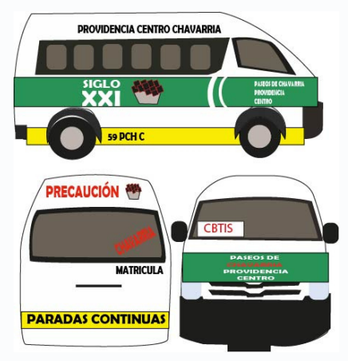

Ruta Tulipanes/Amaque
Comienzo de recoleccion:
Centro, Pachuca de Soto,Hgo.
Rutas
Centro, Pachuca de Soto, Hgo
Morelos, Pachuca de Soto, Hgo
El Palmar, Pachuca de Soto, Hgo.
Piracantos, Pachuca de Soto, Hgo.
San Carlos, 42084 Pachuca de Soto, Hgo
Camelinas, Paseo de Camelinas, 42084 Pachuca de Soto, Hgo.
Tulipanes, 42185 Hgo
El Venado, 42185 Fraccionamientos del Sur, Hgo.
Paseos de Chavarría, 42186 Hgo.Destino
Universidad Tecnológica De Mineral De La Reforma, Camino
Providencia
Pachuquilla, 42180 Hgo.
Amaque, 42180 Hgo
Recuerda
Destino:
Universidad Tecnológica Mineral de la Reforma (UTMiR):
La misma unidad de transporte te dejara delante de la universidad
Informacion Adicional
- Pachuquilla y Amaque: La combi continúa su ruta hacia Pachuqui l la y
Amaque después de la Universidad Tecnológica. Si te encuentras en
Pachuquilla y deseas ir a la Universidad, puedes tomar la misma combi en
su regreso
- Frecuencia de paso: La frecuencia de paso puede variar, con combis
pasando seguidas o con un poco de espera. El tiempo máximo de espera
es de 15 minutos
- Precio: El precio del pasaje es de $10 pesos en cualquier parada
- Horario: El servicio funciona de 6:00 am a 9:00 pm todos los días de la
semana.
Caracteristicas de la Urban
